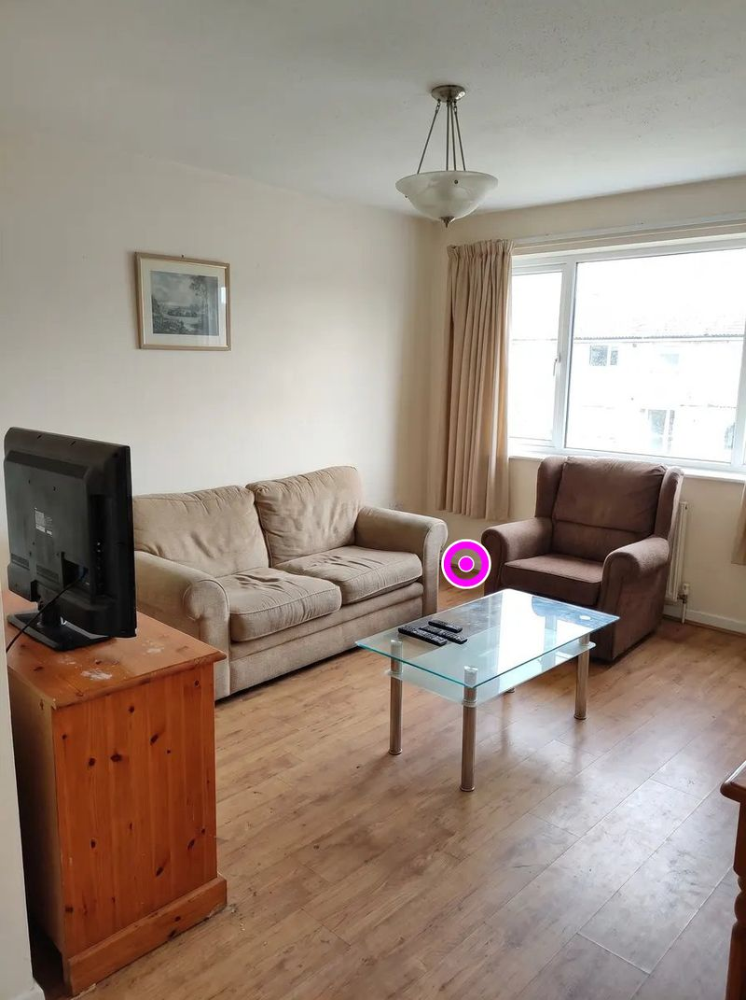
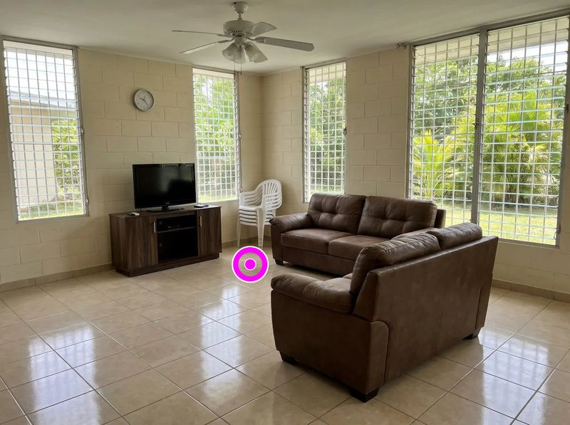
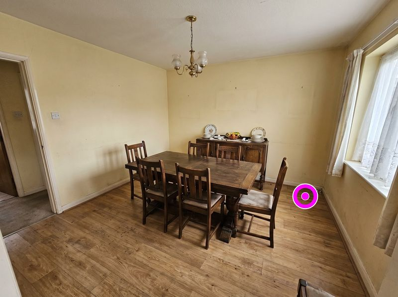
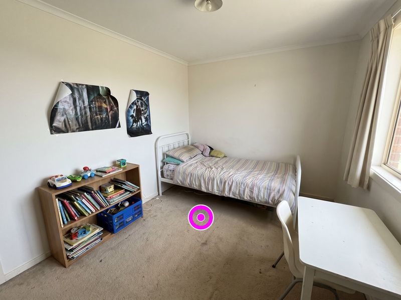
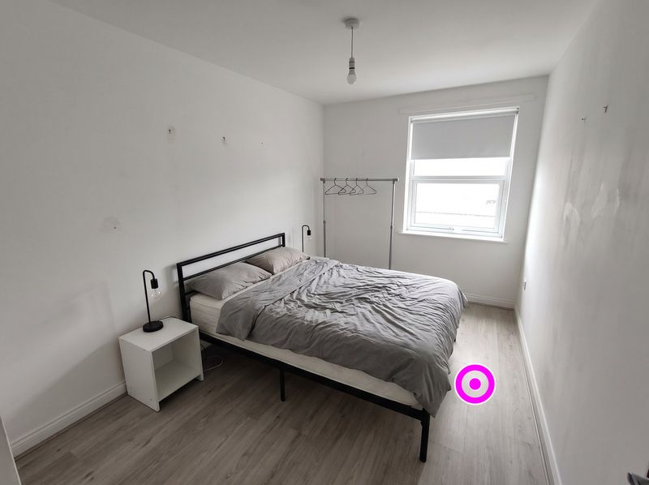
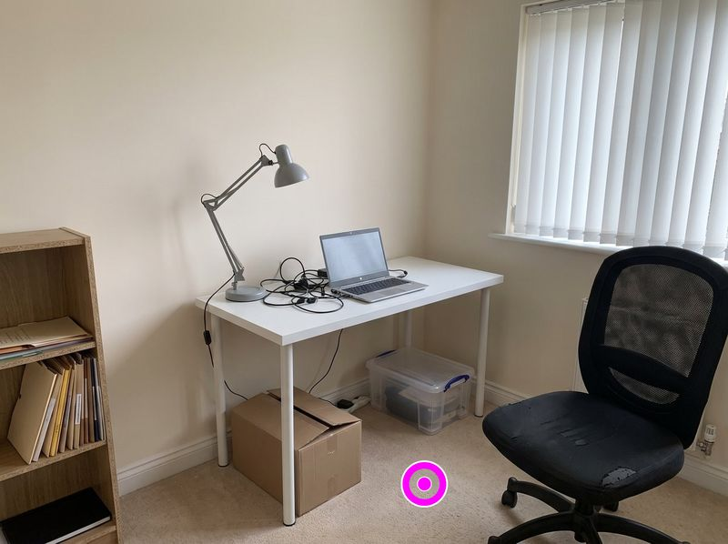
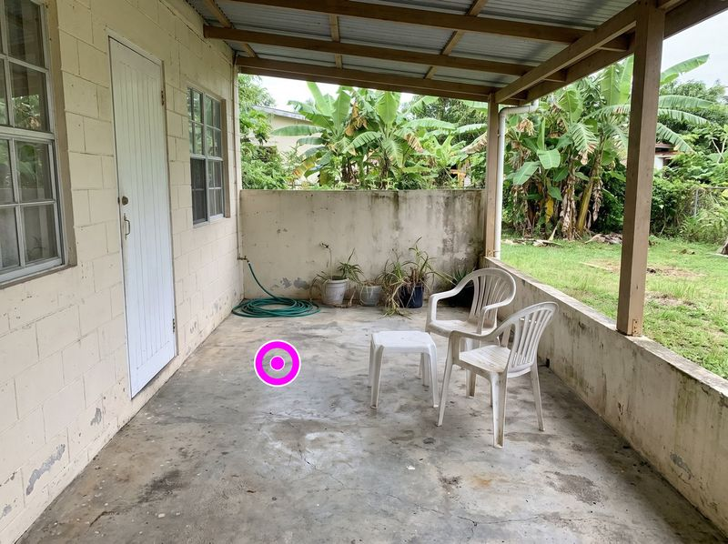

Where AUTO_SPOT would stand the tree

living-1: 0.63, 0.56 accepted
sala-1: 0.44, 0.62 accepted
dining-1: 0.77, 0.66 accepted
kids-1: 0.50, 0.72 accepted
bedroom-1: 0.73, 0.79 accepted
office-1: 0.58, 0.89 accepted
terrace-1: 0.38, 0.67 accepted